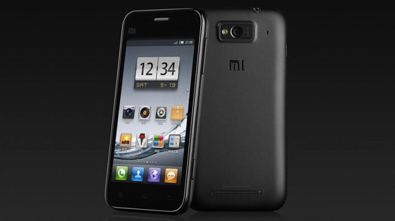
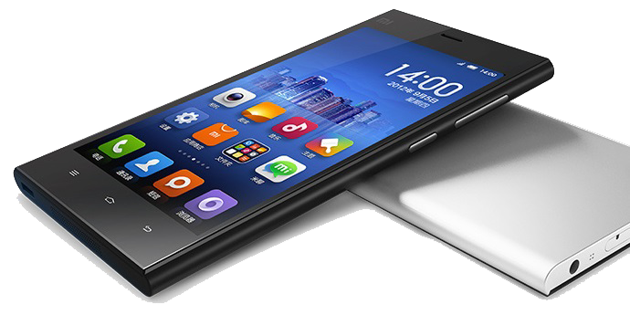
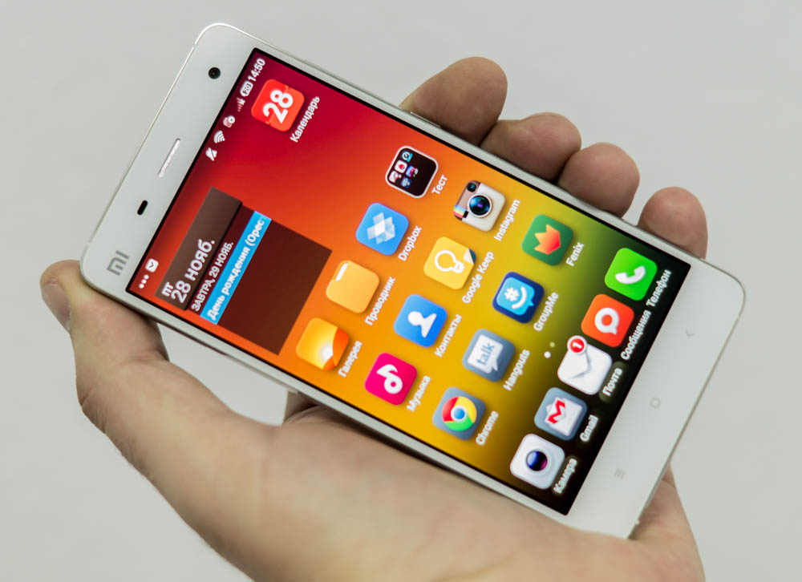
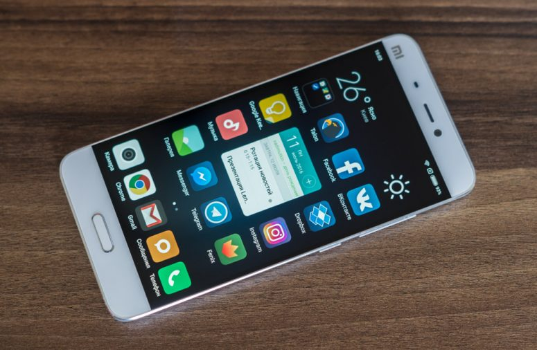
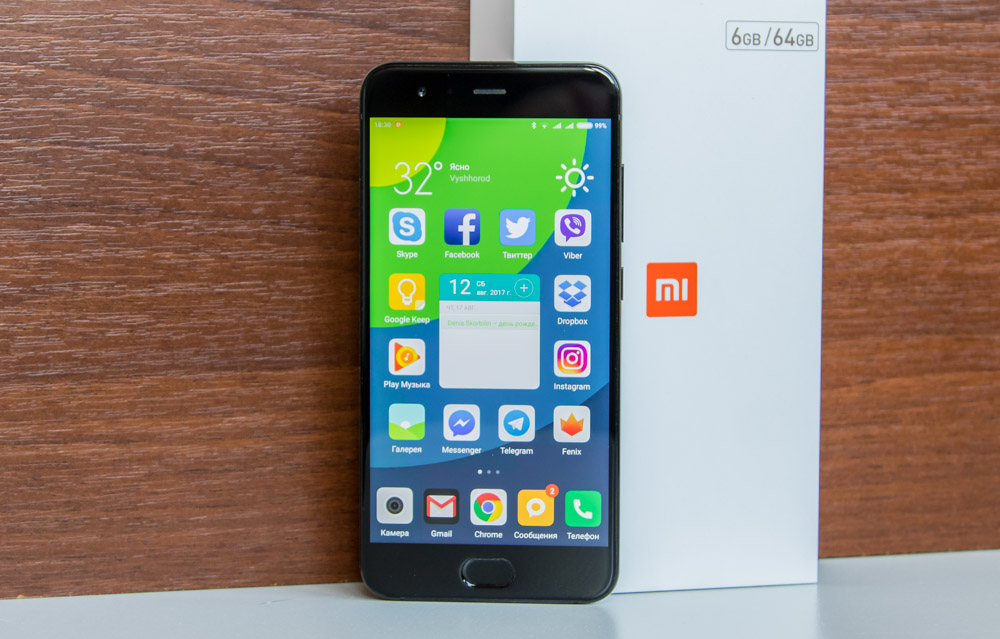
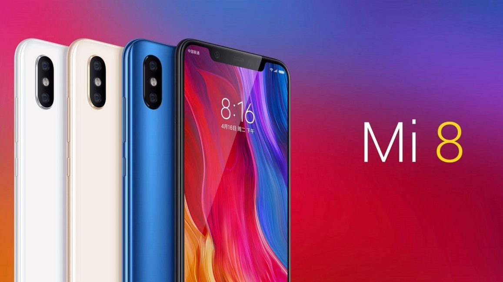

Xiaomi— китайська компанія, заснована Леєм Цзюнем у 2010 році.Перша зустріч засновників Xiaomi відбулася 14 січня 2010 року. Офіційною датою заснування корпорації вважається 6 квітня 2010 року. 16 серпня 2010 року Xiaomi офіційно запустила першу MIUI-прошивку, що базується на ОС Android.
І першим смартфоном компанії став Xiaomi Mi 1. Анонсували його в далекому 2011 році, буквально через рік після того, як Xiaomi була заснована.
Минає рік, і рівно в той же серпневий день компанія анонсує друге покоління флагмана – Xiaomi Mi 2
Знову ж через рік виходить Xiaomi Mi 3, який в черговий раз став на домашньому ринку хітом. Через три хвилини після старту продажів було придбано близько 200 000 примірників.
Четвертий флагман компанії, Xiaomi Mi 4, представили в 2014.
Після виходу Mi 4, Xiaomi сфокусувалися на інших лінійках, відклавши вихід довгоочікуваного п’ятого покоління флагмана на півтора року. Xiaomi Mi 5 вийшов тільки в 2016 році.
Анонс шостого флагмана лінійки, Xiaomi Mi 6, супроводжувався невеликою відстрочкою через Samsung, які буквально змели перші партії Snapdragon 835.
Сьомий флагман компанії, Xiaomi Mi 8, представили в 2018.
У лютому 2019 року світові явили його – Xiaomi Mi 9. За доброю традицією – просунутий, потужний смартфон за не дуже дорого.